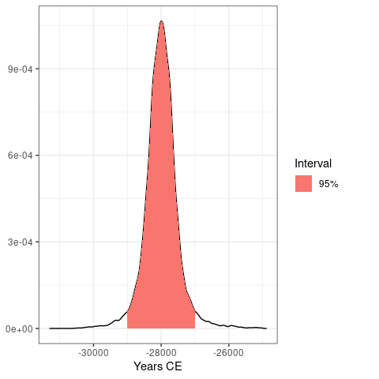
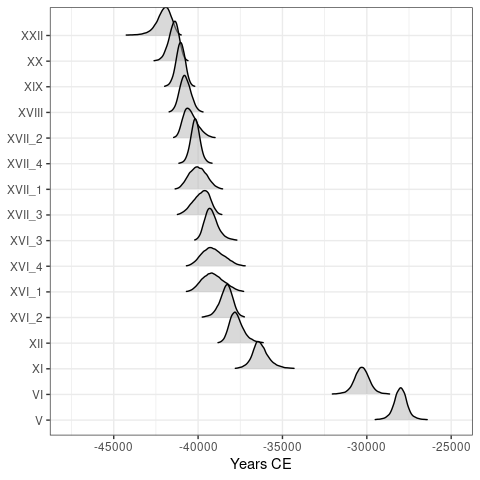
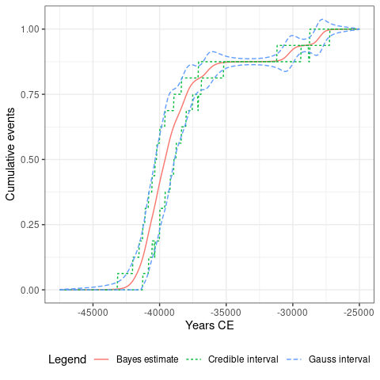
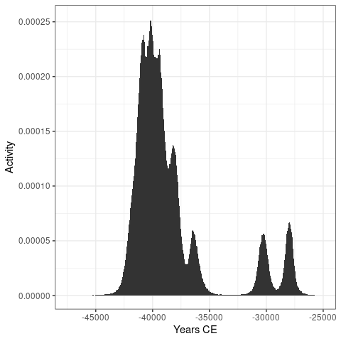
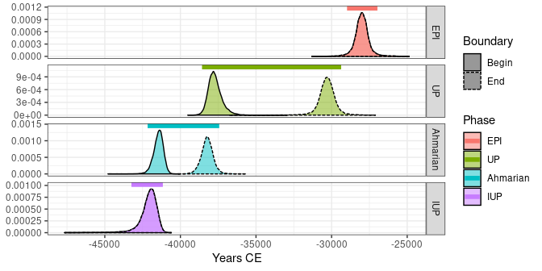
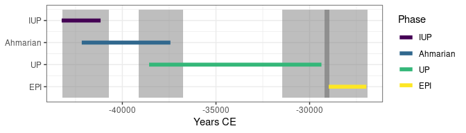

chronos is a heavily modified fork of ArchaeoPhases v1.5, see the changelog for details.
Overview
Statistical analysis of archaeological dates and groups of dates. chronos allows to post-process Markov Chain Monte Carlo (MCMC) simulations from ChronoModel, Oxcal or BCal. This package provides functions for the study of rhythms of the long term from the posterior distribution of a series of dates (tempo and activity plot). It also allows the estimation and visualization of time ranges from the posterior distribution of groups of dates (e.g. duration, transition and hiatus between successive phases).
To cite ArchaeoPhases in publications use:
Philippe, Anne & Vibet, Marie-Anne (2020). Analysis of Archaeological
Phases Using the R Package ArchaeoPhases. Journal of Statistical
Software, Code Snippets, 93(1), 1--25. DOI 10.18637/jss.v093.c01.
Une entrée BibTeX pour les utilisateurs LaTeX est
@Article{,
title = {Analysis of Archaeological Phases Using the {R} Package {ArchaeoPhases}},
author = {Anne Philippe and Marie-Anne Vibet},
year = {2020},
journal = {Journal of Statistical Software, Code Snippets},
volume = {93},
number = {1},
page = {1--25},
doi = {10.18637/jss.v093.c01},
}Installation
You can install the released version of chronos from CRAN with:
install.packages("chronos")And the development version from GitHub with:
# install.packages("remotes")
remotes::install_github("tesselle/chronos")Usage
These examples use data available through the fasti package which is available in a separate repository. fasti provides MCMC outputs from ChronoModel, OxCal and BCal.
## Install the latest version
install.packages("fasti", repos = "https://tesselle.r-universe.dev")Import a CSV file containing a sample from the posterior distribution:
## Read output from ChronoModel
path <- "chronomodel/ksarakil/"
## Events
path_events <- system.file(path, "Chain_all_Events.csv", package = "fasti")
(chrono_events <- read_chronomodel_events(path_events))
#> <EventsMCMC>
#> - Number of events: 16
#> - Calendar: CE
## Phases
path_phases <- system.file(path, "Chain_all_Phases.csv", package = "fasti")
(chrono_phases <- read_chronomodel_phases(path_phases))
#> <PhasesMCMC>
#> - Modelled phases: EPI UP Ahmarian IUP
#> - Calendar: CEchronos uses ggplot2 for plotting information. This makes it easy to customize diagrams (e.g. using themes and scales).
Analysis of a series of dates
## Plot the first event
plot(chrono_events, select = 1, interval = "hpdi")
## Plot all events
plot(chrono_events)
#> Picking joint bandwidth of 49.2

## Tempo plot
tp <- tempo(chrono_events, level = 0.95)
plot(tp)
## Activity plot
ac <- activity(chrono_events)
plot(ac)

Analysis of a group of dates (phase)
boundaries(chrono_phases, level = 0.95)
#> start end
#> EPI -28979 -26970
#> UP -38570 -29369
#> Ahmarian -42168 -37433
#> IUP -43240 -41161
plot(chrono_phases)
## Set chronological order
## (from the oldest to the youngest phase)
set_order(chrono_phases) <- c("IUP", "Ahmarian", "UP", "EPI")
get_order(chrono_phases)
#> [1] "IUP" "Ahmarian" "UP" "EPI"
plot(chrono_phases, level = 0.95)